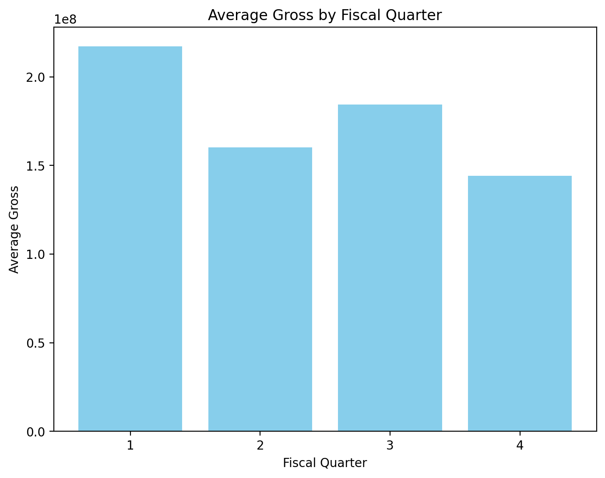
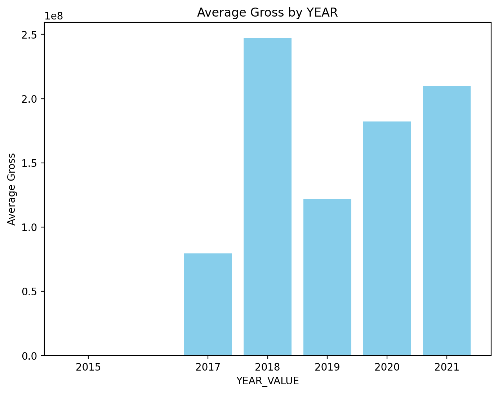
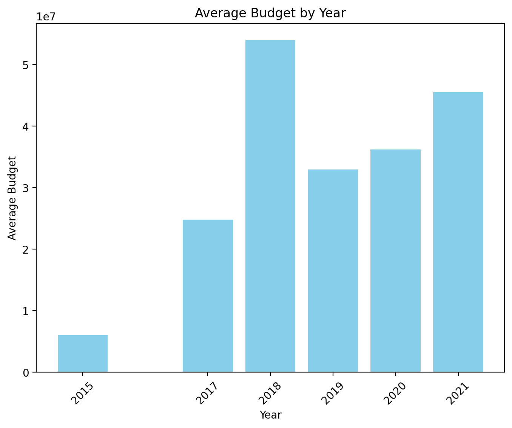
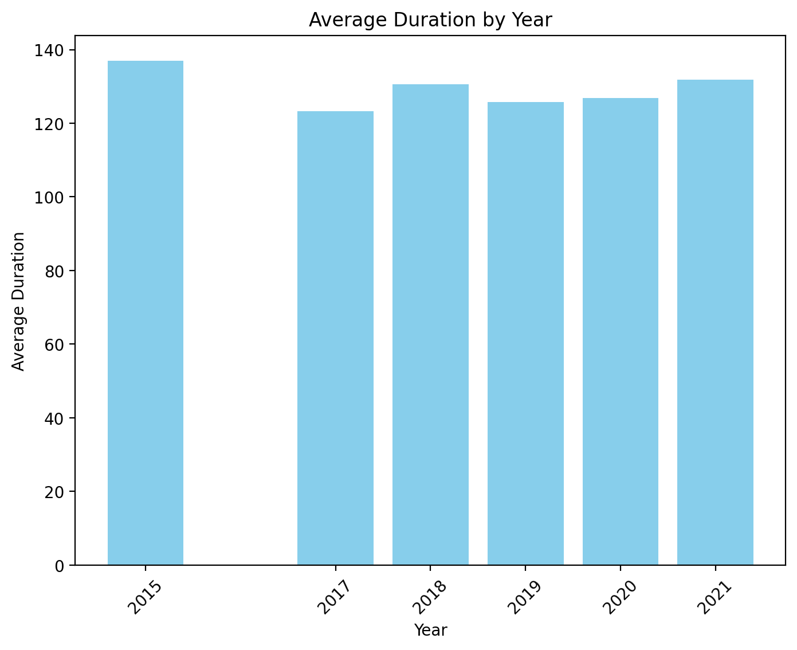

In this project, we will create a data warehouse centered around streaming service movies and shows, along with their reviews, critical reviews, and performance metrics. The project involves extracting data from various sources, transforming it to ensure consistency and accuracy, and loading it into Snowflake for further analysis. We will implement ETL processes, data normalization, and dimension modeling to facilitate efficient querying and reporting. The dimensions will include attributes such as title, director, cast, country, release year, genre, and performance metrics. This structured approach will enable complex analytical queries to derive valuable insights for the streaming industry.
You can load CSVs, JSON files, and more directly into a table in Snowflake. First, go to Databases, select Add Data, upload your CSV, select and name your CSV, and finally confirm the column names.
-----------------------------------------------------------------------------------------------------------------------------------------------------------------------------------------------------------------------------------
|"SHOW_ID" |"TYPE" |"TITLE" |"DIRECTOR" |"CAST" |"COUNTRY" |"DATE_ADDED" |"RELEASE_YEAR" |"RATING" |"DURATION" |"LISTED_IN" |"DESCRIPTION" |
-----------------------------------------------------------------------------------------------------------------------------------------------------------------------------------------------------------------------------------
|s1 |Movie |Ricky Velez: Here's Everything |NULL |NULL |NULL |October 24, 2021 |2021 |TV-MA |NULL |Comedy, Stand Up |Comedian Ricky Velez bares it all with his hon... |
|s2 |Movie |Silent Night |NULL |NULL |NULL |October 23, 2021 |2020 |NULL |94 min |Crime, Drama, Thriller |Mark, a low end South London hitman recently re... |
|s3 |Movie |The Marksman |NULL |NULL |NULL |October 23, 2021 |2021 |PG-13 |108 min |Action, Thriller |A hardened Arizona rancher tries to protect an ... |
-----------------------------------------------------------------------------------------------------------------------------------------------------------------------------------------------------------------------------------
This dataset contains information about movies and shows available on various streaming services. The columns include:
---------------------------------------------------------------------------------------------------------------------------------------------------------------------------------
|"IMBD_ID" |"NAME" |"YEAR" |"RUNTIME" |"GENRE" |"RATING" |"METASCORE" |"TIMELINE" |"VOTES" |"GROSS" |
---------------------------------------------------------------------------------------------------------------------------------------------------------------------------------
|0 |The Shawshank Redemption |1994 |142 |Drama |9.3 |80 |Two imprisoned men bond over a number of years,... |2,394,059 |$28.34M |
|1 |The Godfather |1972 |175 |Crime, Drama |9.2 |100 |An organized crime dynasty's aging patriarch tr... |1,658,439 |$134.97M |
|2 |Soorarai Pottru |2020 |153 |Drama |9.1 |NULL |Nedumaaran Rajangam "Maara" sets out to make th... |78,266 |NULL |
---------------------------------------------------------------------------------------------------------------------------------------------------------------------------------
This dataset contains information about IMDb movie ratings. The columns include:
---------------------------------------------------------------------------------------------------------------------------------------------------------------------------------------------------------------------------------------------------------------------------------
|"NAME" |"RATING" |"GENRE" |"YEAR" |"RELEASED" |"SCORE" |"VOTES" |"DIRECTOR" |"WRITER" |"STAR" |"COUNTRY" |"BUDGET" |"GROSS" |"COMPANY" |"RUNTIME" |
---------------------------------------------------------------------------------------------------------------------------------------------------------------------------------------------------------------------------------------------------------------------------------
|The Shining |R |Drama |1980 |June 13, 1980 (United States) |8.4 |927000.0 |Stanley Kubrick |Stephen King |Jack Nicholson |United Kingdom |19000000.0 |46998772.0 |Warner Bros. |146.0 |
|The Blue Lagoon |R |Adventure |1980 |July 2, 1980 (United States) |5.8 |65000.0 |Randal Kleiser |Henry De Vere Stacpoole |Brooke Shields |United States |4500000.0 |58853106.0 |Columbia Pictures |104.0 |
|Star Wars: Episode V - The Empire Strikes Back |PG |Action |1980 |June 20, 1980 (United States) |8.7 |1200000.0 |Irvin Kershner |Leigh Brackett |Mark Hamill |United States |18000000.0 |538375067.0 |Lucasfilm |124.0 |
---------------------------------------------------------------------------------------------------------------------------------------------------------------------------------------------------------------------------------------------------------------------------------
This dataset contains information about various movies. The columns include:
This project is entirely done in Snowflake's online portal and uses Snowpark for Python to perform analysis and load data. Snowflake's SQL is used to transform data from source to 4NF and then to dimensional models.
The GitHub repository can be found here.
The Jupyter notebook can be found here.
import numpy as np
import matplotlib.pyplot as plt
# Utilize Snowpark for processing data in Snowflake
from snowflake.snowpark.context import get_active_session
from snowflake.snowpark import functions as F
from snowflake.snowpark.window import Window
session = get_active_session()
# Loading datasets from Snowflake tables
df_amazon = session.table("hulu_MOVIES_TV")
df_disney = session.table("disney_MOVIES_TV")
df_hulu = session.table("HULU_MOVIES_TV")
df_netflix = session.table("netflix_MOVIES_TV")
df_industry = session.table("INDUSTRY_MOVIES")
df_IMDB = session.table("IMDB_MOVIE_REVIEWS")
# Selecting necessary columns for each dataset
df_amazon_with_columns = df_amazon.select("TYPE", "TITLE", "DIRECTOR", "CAST", "COUNTRY", "RATING", "DATE_ADDED", "RELEASE_YEAR", "DURATION", "LISTED_IN")
df_disney_with_columns = df_disney.select("TYPE", "TITLE", "DIRECTOR", "CAST", "COUNTRY", "RATING", "DATE_ADDED", "RELEASE_YEAR", "DURATION", "LISTED_IN")
df_hulu_with_columns = df_hulu.select("TYPE", "TITLE", "DIRECTOR", "CAST", "COUNTRY", "RATING", "DATE_ADDED", "RELEASE_YEAR", "DURATION", "LISTED_IN")
df_netflix_with_columns = df_netflix.select("TYPE", "TITLE", "DIRECTOR", "CAST", "COUNTRY", "RATING", "DATE_ADDED", "RELEASE_YEAR", "DURATION", "LISTED_IN")
# Combining datasets from multiple streaming platforms into one DataFrame
df_movie = df_amazon_with_columns.union(df_disney_with_columns).union(df_hulu_with_columns).union(df_netflix_with_columns)
# Dropping duplicate titles and consolidating data
df_movie = df_movie.groupBy("TITLE").agg(
F.coalesce(F.max("TYPE"), F.lit(None)).alias("TYPE"),
F.coalesce(F.max("DIRECTOR"), F.lit(None)).alias("DIRECTOR"),
F.coalesce(F.max("CAST"), F.lit(None)).alias("CAST"),
F.coalesce(F.max("COUNTRY"), F.lit(None)).alias("COUNTRY"),
F.coalesce(F.max("RATING"), F.lit(None)).alias("RATING"),
F.coalesce(F.max("DATE_ADDED"), F.lit(None)).alias("DATE_ADDED"),
F.coalesce(F.max("RELEASE_YEAR"), F.lit(None)).alias("RELEASE_YEAR"),
F.coalesce(F.max("DURATION"), F.lit(None)).alias("DURATION"),
F.coalesce(F.max("LISTED_IN"), F.lit(None)).alias("LISTED_IN")
)
# Assigning a unique identifier (primary key) to each movie
df_movie = df_movie.withColumn("Movies_key", F.row_number().over(Window.orderBy(F.lit(1))))
# Saving the final dataset to a Snowflake table
df_movie.write.mode("overwrite").saveAsTable("MOVIES_TV")
# Adding streaming platform flags to movies
df_amazon_with_rating = df_amazon.select("TITLE").with_column("amazon", F.lit(True))
df_disney_with_rating = df_disney.select("TITLE").with_column("disney", F.lit(True))
df_hulu_with_rating = df_hulu.select("TITLE").with_column("hulu", F.lit(True))
df_netflix_with_rating = df_netflix.select("TITLE").with_column("netflix", F.lit(True))
# Joining the streaming platform flags to the movie DataFrame
df_movie = df_movie.join(df_amazon_with_rating, on="TITLE", how="left")\
.join(df_disney_with_rating, on="TITLE", how="left")\
.join(df_hulu_with_rating, on="TITLE", how="left")\
.join(df_netflix_with_rating, on="TITLE", how="left")
# Saving the updated movie DataFrame to Snowflake
df_movie.write.mode("overwrite").save_as_table("MOVIES_TV")
# Merging Industry and IMDb data for additional movie information
df_industry = df_industry.select(
df_industry["NAME"].alias("TITLE"),
df_industry["SCORE"].alias("INDUSTRY_SCORE"),
df_industry["VOTES"].alias("INDUSTRY_VOTES"),
df_industry["Budget"],
df_industry["GROSS"],
df_industry["COMPANY"]
)
df_IMDB = df_IMDB.select(
df_IMDB["NAME"].alias("TITLE"),
df_IMDB["IMBD_ID"].alias("IMBD"),
df_IMDB["RATING"].alias("IMBD_RATING"),
df_IMDB["METASCORE"],
df_IMDB["VOTES"].alias("IMBD_VOTES")
)
# Joining Industry and IMDb data
df_INDUSTRY_JOIN = df_industry.join(df_IMDB, on="TITLE", how="left")
# Saving the combined data to a Snowflake table
df_INDUSTRY_JOIN.write.mode("overwrite").save_as_table("MOVIES_TV_REVIEWS")
# Combining movie data with the industry and IMDb data
df_streaming = df_movie.join(df_INDUSTRY_JOIN, on="TITLE", how="left")
df_streaming.show()
# Saving the final streaming data to a Snowflake table
df_streaming.write.mode("overwrite").save_as_table("STREAMING_MOVIES_TV")
-------------------------------------------------------------------------------------------------------------------------------------------------------------------------------------------------------------------------------------------------------------------------------------------------------------------------------------------------------------------------------------------------------------------
|"TITLE" |"TYPE" |"DIRECTOR" |"CAST" |"COUNTRY" |"RATING" |"DATE_ADDED" |"RELEASE_YEAR" |"DURATION" |"LISTED_IN" |"MOVIES_KEY" |"AMAZON" |"DISNEY" |"HULU" |"NETFLIX" |"INDUSTRY_SCORE" |"INDUSTRY_VOTES" |"BUDGET" |"GROSS" |"COMPANY" |"IMBD" |"IMBD_RATING" |"METASCORE" |"IMBD_VOTES" |
-------------------------------------------------------------------------------------------------------------------------------------------------------------------------------------------------------------------------------------------------------------------------------------------------------------------------------------------------------------------------------------------------------------------
|The Evil Next Door |Movie |NULL |NULL |NULL |NULL |October 21, 2021 |2020 |88 min |Horror, Thriller |1 |True |NULL |True |NULL |NULL |NULL |NULL |NULL |NULL |NULL |NULL |NULL |NULL |
|Home Sweet Home |TV Show |NULL |NULL |NULL |TV-PG |October 16, 2021 |2021 |1 Season |Reality |2 |True |NULL |True |NULL |NULL |NULL |NULL |NULL |NULL |NULL |NULL |NULL |NULL |
|Censor |Movie |NULL |NULL |NULL |NULL |October 14, 2021 |2021 |84 min |Horror |3 |True |NULL |True |NULL |NULL |NULL |NULL |NULL |NULL |NULL |NULL |NULL |NULL |
|The Real Housewives of Orange County |TV Show |NULL |NULL |United States |TV-14 |October 14, 2021 |2006 |15 Seasons |Reality |4 |True |NULL |True |NULL |NULL |NULL |NULL |NULL |NULL |NULL |NULL |NULL |NULL |
|The Untouchables |Movie |NULL |NULL |NULL |R |October 1, 2021 |1987 |119 min |Classics, Crime, Drama |5 |True |NULL |True |NULL |7.9 |289000.0 |25000000.0 |76270454.0 |Paramount Pictures |538 |7.9 |79 |287,105 |
|Showtime Championship Boxing: Lopez vs. Salido (R) |Movie |NULL |NULL |NULL |NULL |October 16, 2021 |2011 |NULL |Sports |6 |True |NULL |True |NULL |NULL |NULL |NULL |NULL |NULL |NULL |NULL |NULL |NULL |
|Rogue Hostage |Movie |NULL |NULL |NULL |NULL |October 10, 2021 |2021 |94 min |Action, Thriller |7 |True |NULL |True |NULL |NULL |NULL |NULL |NULL |NULL |NULL |NULL |NULL |NULL |
|Queen of the Damned |Movie |NULL |NULL |NULL |R |October 1, 2021 |2002 |101 min |Horror |8 |True |NULL |True |NULL |5.3 |53000.0 |35000000.0 |45479110.0 |Warner Bros. |NULL |NULL |NULL |NULL |
|Light It Up |Movie |NULL |NULL |NULL |R |October 1, 2021 |1999 |99 min |Black Stories, Drama, LGBTQ+ |9 |True |NULL |True |NULL |NULL |NULL |NULL |NULL |NULL |NULL |NULL |NULL |NULL |
|Species |Movie |NULL |NULL |NULL |R |October 1, 2021 |1995 |109 min |Horror, Science Fiction, Thriller |10 |True |NULL |True |NULL |5.8 |76000.0 |35000000.0 |113374103.0 |Metro-Goldwyn-Mayer (MGM) |NULL |NULL |NULL |NULL |
-------------------------------------------------------------------------------------------------------------------------------------------------------------------------------------------------------------------------------------------------------------------------------------------------------------------------------------------------------------------------------------------------------------------
# fix date collum to proper format
df_streaming_filled = df_streaming.with_column(
"DATE_ADDED",
F.to_char(F.to_date("DATE_ADDED", "MON DD, YYYY"), "MM/DD/YYYY")
)
# fill in date added
df_streaming_filled = df_streaming.with_column(
"DATE_ADDED",
F.concat(F.lit("01/01/"), F.col("RELEASE_YEAR").cast("string"))
)
df_streaming_filled = df_streaming_filled.with_column(
"RATING", F.coalesce(F.col("RATING"), F.lit("TV-PG"))
)
df_streaming_filled = df_streaming_filled.with_column(
"COUNTRY", F.coalesce(F.col("COUNTRY"), F.lit("United States"))
)
# Remove "min" and keep the numeric value
df_streaming_filled = df_streaming_filled.with_column(
"DURATION",
F.regexp_replace(F.col("DURATION"), r"\s*min", "")
)
# Remove "season" and keep the numeric value
df_streaming_filled = df_streaming_filled.with_column(
"DURATION",
F.regexp_replace(F.col("DURATION"), r"\s*Season\s*s*", "00")
)
# Replace NULL values in the "DURATION" column with "90 min"
df_streaming_filled = df_streaming_filled.with_column(
"DURATION",
F.coalesce(F.col("DURATION"), F.lit("90"))
)
# Convert the DURATION column to numeric format, keeping the "min" part, so it's consistent.
df_streaming_filled = df_streaming_filled.with_column(
"DURATION",
F.concat(F.col("DURATION"))
)
------------------------------------------------------------------------------------------------------------------------------------------------------------------------------------------------------------------------------------------------------------------------------------------------------------------------------------------------------------------------------------------------------
|"TITLE" |"TYPE" |"DIRECTOR" |"CAST" |"RELEASE_YEAR" |"LISTED_IN" |"MOVIES_KEY" |"AMAZON" |"DISNEY" |"HULU" |"NETFLIX" |"INDUSTRY_SCORE" |"INDUSTRY_VOTES" |"BUDGET" |"GROSS" |"COMPANY" |"IMBD" |"IMBD_RATING" |"METASCORE" |"IMBD_VOTES" |"DATE_ADDED" |"RATING" |"COUNTRY" |"DURATION" |
------------------------------------------------------------------------------------------------------------------------------------------------------------------------------------------------------------------------------------------------------------------------------------------------------------------------------------------------------------------------------------------------------
|Silent Night |Movie |NULL |NULL |2020 |Crime, Drama, Thriller |1 |True |NULL |True |NULL |NULL |NULL |NULL |NULL |NULL |NULL |NULL |NULL |NULL |01/01/2020 |TV-PG |United States |94 |
|Beyond Oak Island |TV Show |NULL |NULL |2020 |History, Reality |2 |True |NULL |True |NULL |NULL |NULL |NULL |NULL |NULL |NULL |NULL |NULL |NULL |01/01/2020 |TV-PG |United States |100 |
|Sleepwalker |Movie |NULL |NULL |2017 |Thriller |3 |True |NULL |True |NULL |NULL |NULL |NULL |NULL |NULL |NULL |NULL |NULL |NULL |01/01/2017 |TV-14 |United States |88 |
|Queen of the Damned |Movie |NULL |NULL |2002 |Horror |4 |True |NULL |True |NULL |5.3 |53000.0 |35000000.0 |45479110.0 |Warner Bros. |NULL |NULL |NULL |NULL |01/01/2002 |R |United States |101 |
|The Simpsons |TV Show |NULL |Dan Castellaneta, Julie Kavner, Nancy Cartwrigh... |1989 |Animation, Comedy |5 |True |True |True |NULL |NULL |NULL |NULL |NULL |NULL |NULL |NULL |NULL |NULL |01/01/1989 |TV-PG |United States |3200 |
|Castle |TV Show |NULL |NULL |2009 |Comedy, Crime, Drama |6 |True |NULL |True |NULL |NULL |NULL |NULL |NULL |NULL |NULL |NULL |NULL |NULL |01/01/2009 |TV-14 |United States |800 |
|Why Not Us |TV Show |NULL |NULL |2021 |Documentaries, Sports |7 |True |NULL |True |NULL |NULL |NULL |NULL |NULL |NULL |NULL |NULL |NULL |NULL |01/01/2021 |TV-PG |United States |200 |
|Big Sky |TV Show |NULL |NULL |2020 |Crime, Drama |8 |True |NULL |True |NULL |NULL |NULL |NULL |NULL |NULL |NULL |NULL |NULL |NULL |01/01/2020 |TV-14 |United States |200 |
|Entre Hombres |TV Show |NULL |NULL |2021 |Action, Adventure, Drama |9 |True |NULL |True |NULL |NULL |NULL |NULL |NULL |NULL |NULL |NULL |NULL |NULL |01/01/2021 |TV-PG |United States |100 |
|Escape from Alcatraz |Movie |NULL |NULL |1979 |Action, Crime, Drama |10 |True |NULL |True |NULL |NULL |NULL |NULL |NULL |NULL |NULL |NULL |NULL |NULL |01/01/1979 |PG |United States |112 |
------------------------------------------------------------------------------------------------------------------------------------------------------------------------------------------------------------------------------------------------------------------------------------------------------------------------------------------------------------------------------------------------------
making data into a 4nf table
CREATE OR REPLACE TABLE nf_movies_tv_shows AS
SELECT
MOVIES_KEY,
TITLE,
TYPE,
RATING,
DATE_ADDED,
RELEASE_YEAR,
DURATION,
LISTED_IN
FROM STREAMING_MOVIES_TV;
ALTER TABLE nf_movies_tv_shows
ADD PRIMARY KEY (MOVIES_KEY);
CREATE OR REPLACE TABLE nf_cast AS
SELECT
MOVIES_KEY,
"CAST"
FROM STREAMING_MOVIES_TV
WHERE "CAST" IS NOT NULL;
ALTER TABLE nf_countries
ADD CONSTRAINT fk_movies_key FOREIGN KEY (MOVIES_KEY) REFERENCES nf_movies_tv_shows(MOVIES_KEY);
CREATE OR REPLACE TABLE nf_countries AS
SELECT
MOVIES_KEY,
COUNTRY
FROM STREAMING_MOVIES_TV
WHERE COUNTRY IS NOT NULL;
ALTER TABLE nf_countries
ADD CONSTRAINT fk_movies_key FOREIGN KEY (MOVIES_KEY) REFERENCES nf_movies_tv_shows(MOVIES_KEY);
CREATE OR REPLACE TABLE nf_platforms AS
SELECT
MOVIES_KEY,
amazon,
disney,
hulu,
netflix
FROM STREAMING_MOVIES_TV;
ALTER TABLE nf_platforms
ADD CONSTRAINT fk_movies_key FOREIGN KEY (MOVIES_KEY) REFERENCES nf_movies_tv_shows(MOVIES_KEY);
CREATE OR REPLACE TABLE nf_ratings AS
SELECT
MOVIES_KEY,
IMBD,
IMBD_RATING,
METASCORE,
IMBD_VOTES
FROM STREAMING_MOVIES_TV;
ALTER TABLE nf_ratings
ADD CONSTRAINT fk_movies_key FOREIGN KEY (MOVIES_KEY) REFERENCES nf_movies_tv_shows(MOVIES_KEY);
CREATE OR REPLACE TABLE nf_industry AS
SELECT
MOVIES_KEY,
BUDGET,
GROSS,
COMPANY
FROM STREAMING_MOVIES_TV;
ALTER TABLE nf_industry
ADD CONSTRAINT fk_movies_key FOREIGN KEY (MOVIES_KEY) REFERENCES nf_movies_tv_shows(MOVIES_KEY);
The Extract, Transform, and Load (ETL) process for this project involves several key steps to ensure data is properly structured and optimized for analysis. Initially, data is extracted from various Kaggle datasets and loaded into Snowflake. The data is then transformed by selecting relevant columns, removing duplicates, and filling in missing values. The transformed data is normalized into Fourth Normal Form (4NF) tables to eliminate redundancy and ensure data integrity. Finally, the normalized data is used to create dimension and fact tables, which are essential for building a dimensional model. This model supports efficient querying and reporting, enabling complex analytical queries to derive valuable insights for the streaming industry.
CREATE OR REPLACE TABLE DIM_DATES (
date_key INT PRIMARY KEY,
year_value INT,
month_value INT,
day_value INT,
quarter_fiscal INT,
is_week_day BOOLEAN
);
CREATE OR REPLACE TABLE DIM_PERFORMANCE (
PERFORMANCE_KEY INT PRIMARY KEY,
GROSS INT,
BUDGET INT,
IMBD_NUM INT,
METASCORE VARCHAR,
VOTES INT
);
CREATE OR REPLACE TABLE DIM_JUNK (
JUNK_KEY INT PRIMARY KEY,
LISTED_IN VARCHAR,
DURATION INT,
CAST VARCHAR,
DIRECTOR VARCHAR,
RATING VARCHAR,
AMAZON VARCHAR,
DISNEY VARCHAR,
HULU VARCHAR,
NETFLIX VARCHAR
);
CREATE OR REPLACE TABLE FACT_MOVIE_PERFORMANCE (
MOVIE_ID INT PRIMARY KEY,
MOVIE_TITLE VARCHAR, -- New column for movie title
JUNK_KEY INT,
PERFORMANCE_KEY INT,
DATE_KEY INT,
FOREIGN KEY (JUNK_KEY) REFERENCES DIM_JUNK(JUNK_KEY),
FOREIGN KEY (PERFORMANCE_KEY) REFERENCES DIM_PERFORMANCE(PERFORMANCE_KEY),
FOREIGN KEY (DATE_KEY) REFERENCES DIM_DATES(date_key)
);
-- Inserting data into DIM_DATES with renamed columns
INSERT INTO DATAWHAREHOUSEPROJECT.PUBLIC.DIM_DATES (date_key, year_value, month_value, day_value, quarter_fiscal, is_week_day)
SELECT
TO_NUMBER(TO_CHAR(TO_DATE(MM.DATE_ADDED, 'MM/DD/YYYY'), 'YYYYMMDD')) AS date_key,
EXTRACT(YEAR FROM TO_DATE(MM.DATE_ADDED, 'MM/DD/YYYY')) AS year_value,
EXTRACT(MONTH FROM TO_DATE(MM.DATE_ADDED, 'MM/DD/YYYY')) AS month_value,
EXTRACT(DAY FROM TO_DATE(MM.DATE_ADDED, 'MM/DD/YYYY')) AS day_value,
CASE
WHEN EXTRACT(MONTH FROM TO_DATE(MM.DATE_ADDED, 'MM/DD/YYYY')) BETWEEN 1 AND 3 THEN 1
WHEN EXTRACT(MONTH FROM TO_DATE(MM.DATE_ADDED, 'MM/DD/YYYY')) BETWEEN 4 AND 6 THEN 2
WHEN EXTRACT(MONTH FROM TO_DATE(MM.DATE_ADDED, 'MM/DD/YYYY')) BETWEEN 7 AND 9 THEN 3
ELSE 4
END AS quarter_fiscal,
CASE
WHEN TO_CHAR(TO_DATE(MM.DATE_ADDED, 'MM/DD/YYYY'), 'D') IN ('1', '7') THEN FALSE
ELSE TRUE
END AS is_week_day
FROM DATAWHAREHOUSEPROJECT.PUBLIC.NF_MOVIES_TV_SHOWS MM;
-- Inserting data into DIM_PERFORMANCE with handling of commas in numeric values
INSERT INTO DATAWHAREHOUSEPROJECT.PUBLIC.DIM_PERFORMANCE (PERFORMANCE_KEY, GROSS, BUDGET, IMBD_NUM, METASCORE, VOTES)
SELECT
MM.MOVIES_KEY AS PERFORMANCE_KEY,
TO_NUMBER(REPLACE(NI.GROSS, ',', '')) AS GROSS,
TO_NUMBER(REPLACE(NI.BUDGET, ',', '')) AS BUDGET,
TO_NUMBER(REPLACE(NR.IMBD, ',', '')) AS IMBD_NUM,
NR.METASCORE,
TO_NUMBER(REPLACE(NR.IMBD_VOTES, ',', '')) AS VOTES
FROM DATAWHAREHOUSEPROJECT.PUBLIC.NF_MOVIES_TV_SHOWS MM
JOIN DATAWHAREHOUSEPROJECT.PUBLIC.NF_INDUSTRY NI ON MM.MOVIES_KEY = NI.MOVIES_KEY
JOIN DATAWHAREHOUSEPROJECT.PUBLIC.NF_RATINGS NR ON MM.MOVIES_KEY = NR.MOVIES_KEY;
-- Inserting data into DIM_JUNK without DIRECTOR
INSERT INTO DATAWHAREHOUSEPROJECT.PUBLIC.DIM_JUNK (JUNK_KEY, LISTED_IN, DURATION, CAST, RATING, AMAZON, DISNEY, HULU, NETFLIX)
SELECT
MM.MOVIES_KEY AS JUNK_KEY, -- Explicitly qualify MOVIES_KEY
MM.LISTED_IN,
TO_NUMBER(MM.DURATION) AS DURATION, -- Assuming DURATION should be numeric
NC.CAST,
MM.RATING,
NP.AMAZON,
NP.DISNEY,
NP.HULU,
NP.NETFLIX
FROM DATAWHAREHOUSEPROJECT.PUBLIC.NF_MOVIES_TV_SHOWS MM
JOIN DATAWHAREHOUSEPROJECT.PUBLIC.NF_CAST NC ON MM.MOVIES_KEY = NC.MOVIES_KEY
JOIN DATAWHAREHOUSEPROJECT.PUBLIC.NF_PLATFORMS NP ON MM.MOVIES_KEY = NP.MOVIES_KEY;
INSERT INTO DATAWHAREHOUSEPROJECT.PUBLIC.FACT_MOVIE_PERFORMANCE (MOVIE_ID, MOVIE_TITLE, JUNK_KEY, PERFORMANCE_KEY, DATE_KEY)
SELECT DISTINCT
MM.MOVIES_KEY AS MOVIE_ID, -- Explicitly qualify MOVIES_KEY
MM.TITLE AS MOVIE_TITLE, -- Correctly reference MOVIE_TITLE
DJ.JUNK_KEY,
DP.PERFORMANCE_KEY,
DD.date_key
FROM DATAWHAREHOUSEPROJECT.PUBLIC.NF_MOVIES_TV_SHOWS MM
JOIN DATAWHAREHOUSEPROJECT.PUBLIC.DIM_JUNK DJ ON MM.MOVIES_KEY = DJ.JUNK_KEY
JOIN DATAWHAREHOUSEPROJECT.PUBLIC.DIM_PERFORMANCE DP ON MM.MOVIES_KEY = DP.PERFORMANCE_KEY
JOIN DATAWHAREHOUSEPROJECT.PUBLIC.DIM_DATES DD
ON EXTRACT(YEAR FROM TO_DATE(MM.RELEASE_YEAR, 'YYYY')) = DD.year_value -- Match by year
WHERE DD.year_value IS NOT NULL;
----------------------------------------------------------------------------------------------
|"DATE_KEY" |"YEAR_VALUE" |"MONTH_VALUE" |"DAY_VALUE" |"QUARTER_FISCAL" |"IS_WEEK_DAY" |
----------------------------------------------------------------------------------------------
|20191001 |2019 |10 |1 |4 |True |
|20200626 |2020 |6 |26 |2 |True |
|20190101 |2019 |1 |1 |1 |True |
|20190617 |2019 |6 |17 |2 |True |
|20211001 |2021 |10 |1 |4 |True |
|20210901 |2021 |9 |1 |3 |True |
|20210801 |2021 |8 |1 |3 |True |
|20201101 |2020 |11 |1 |4 |True |
|20211001 |2021 |10 |1 |4 |True |
|20190824 |2019 |8 |24 |3 |True |
----------------------------------------------------------------------------------------------
---------------------------------------------------------------------------------
|"PERFORMANCE_KEY" |"GROSS" |"BUDGET" |"IMBD_NUM" |"METASCORE" |"VOTES" |
---------------------------------------------------------------------------------
|2800 |23402427 |18000000 |174 |89 |327227 |
|6761 |54766923 |6000000 |853 |86 |48056 |
|2009 |389925971 |18000000 |74 |85 |897322 |
|5906 |11487676 |NULL |111 |86 |235495 |
|7143 |78912963 |11200000 |851 |67 |114178 |
|8894 |5473212 |30000000 |73 |NULL |318184 |
|9960 |70720215 |6000000 |682 |61 |326537 |
|10137 |138545632 |6000000 |273 |92 |387293 |
|5751 |76270454 |25000000 |538 |79 |287105 |
|4383 |120207127 |15000000 |980 |68 |240345 |
---------------------------------------------------------------------------------
--------------------------------------------------------------------------------------------------------------------------------------------------------------------------------------------------------
|"JUNK_KEY" |"LISTED_IN" |"DURATION" |"CAST" |"DIRECTOR" |"RATING" |"AMAZON" |"DISNEY" |"HULU" |"NETFLIX" |
--------------------------------------------------------------------------------------------------------------------------------------------------------------------------------------------------------
|2800 |Classic Movies, Dramas, Sports Movies |129 |Robert De Niro, Cathy Moriarty, Joe Pesci, Fran... |NULL |R |NULL |NULL |NULL |true |
|6761 |Dramas, Independent Movies, International Movies |107 |Ronwaldo Martin, Hasmine Killip, Maria Isabel L... |NULL |TV-MA |NULL |NULL |NULL |true |
|2009 |Action & Adventure, Children & Family Movies, C... |116 |Harrison Ford, Karen Allen, Paul Freeman, Ronal... |NULL |PG |NULL |NULL |NULL |true |
|8894 |Classic Movies, Dramas |229 |Robert De Niro, James Woods, Elizabeth McGovern... |NULL |R |NULL |NULL |NULL |true |
|9960 |Classic Movies, Comedies, Cult Movies |103 |Matthew Broderick, Alan Ruck, Mia Sara, Jeffrey... |NULL |PG-13 |NULL |NULL |NULL |true |
|10137 |Action & Adventure, Classic Movies, Dramas |120 |Tom Berenger, Willem Dafoe, Charlie Sheen, Fore... |NULL |R |NULL |NULL |NULL |true |
|3665 |Classic Movies, Dramas |134 |Dustin Hoffman, Tom Cruise, Valeria Golino, Ger... |NULL |R |NULL |NULL |NULL |true |
|7190 |Action & Adventure, Children & Family Movies, C... |127 |Harrison Ford, Sean Connery, Denholm Elliott, A... |NULL |PG-13 |NULL |NULL |NULL |true |
|465 |Classic Movies, Comedies, Dramas |120 |Danny Aiello, Ossie Davis, Ruby Dee, Richard Ed... |NULL |R |NULL |NULL |NULL |true |
|5441 |Action & Adventure, Classic Movies, Dramas |181 |Kevin Costner, Mary McDonnell, Rodney Grant, Gr... |NULL |PG-13 |NULL |NULL |NULL |true |
--------------------------------------------------------------------------------------------------------------------------------------------------------------------------------------------------------
----------------------------------------------------------------------------
|"MOVIE_ID" |"MOVIE_TITLE" |"JUNK_KEY" |"PERFORMANCE_KEY" |"DATE_KEY" |
----------------------------------------------------------------------------
|167 |Wind River |167 |167 |20170601 |
|4619 |The Innocents |4619 |4619 |20180401 |
|2706 |Sin City |2706 |2706 |20191101 |
|1301 |Evil |1301 |1301 |20191225 |
|4619 |The Innocents |4619 |4619 |20181101 |
|10543 |Ray |10543 |10543 |20210301 |
----------------------------------------------------------------------------
from snowflake.snowpark.functions import col, avg
import matplotlib.pyplot as plt
# Aggregating the average gross by fiscal quarter
df_avg_gross_by_quarter = (df_dim_dates
.join(df_dim_performance, df_dim_dates.date_key == df_dim_performance.PERFORMANCE_KEY)
.group_by(df_dim_dates.quarter_fiscal)
.agg(avg(df_dim_performance.GROSS).alias("avg_gross"))
.sort(col("quarter_fiscal"))
)
# Collecting the results into a Pandas DataFrame
gross_data = df_avg_gross_by_quarter.to_pandas()
# Plotting the bar chart with the correct column names
plt.figure(figsize=(8, 6))
plt.bar(gross_data['QUARTER_FISCAL'], gross_data['AVG_GROSS'], color='skyblue')
plt.xlabel('Fiscal Quarter')
plt.ylabel('Average Gross')
plt.title('Average Gross by Fiscal Quarter')
plt.xticks(gross_data['QUARTER_FISCAL'])
plt.show()

from snowflake.snowpark.functions import col, avg
import matplotlib.pyplot as plt
# Aggregating the average gross by fiscal quarter
df_avg_gross_by_quarter = (df_dim_dates
.join(df_dim_performance, df_dim_dates.date_key == df_dim_performance.PERFORMANCE_KEY)
.group_by(df_dim_dates.year_value)
.agg(avg(df_dim_performance.GROSS).alias("avg_gross"))
.sort(col("year_value"))
)
# Collecting the results into a Pandas DataFrame
gross_data = df_avg_gross_by_quarter.to_pandas()
# Plotting the bar chart with the correct column names
plt.figure(figsize=(8, 6))
plt.bar(gross_data['YEAR_VALUE'], gross_data['AVG_GROSS'], color='skyblue')
plt.xlabel('YEAR_VALUE')
plt.ylabel('Average Gross')
plt.title('Average Gross by YEAR')
plt.xticks(gross_data['YEAR_VALUE'])
plt.show()

from snowflake.snowpark.functions import col, avg
import matplotlib.pyplot as plt
# Aggregating the average budget by year (instead of fiscal quarter)
df_avg_budget_by_year = (
df_dim_dates
.join(df_dim_performance, df_dim_dates.date_key == df_dim_performance.PERFORMANCE_KEY) # Corrected join
.group_by(df_dim_dates.year_value) # Grouping by year_value
.agg(avg(df_dim_performance.BUDGET).alias("avg_BUDGET"))
.sort(col("year_value"))
)
# Collecting the results into a Pandas DataFrame
budget_data = df_avg_budget_by_year.to_pandas()
# Plotting the bar chart with the correct column names
plt.figure(figsize=(8, 6))
plt.bar(budget_data['YEAR_VALUE'], budget_data['AVG_BUDGET'], color='skyblue')
plt.xlabel('Year')
plt.ylabel('Average Budget')
plt.title('Average Budget by Year')
plt.xticks(budget_data['YEAR_VALUE'], rotation=45) # Rotating xticks for better visibility
plt.show()

from snowflake.snowpark.functions import col, avg
import matplotlib.pyplot as plt
# Aggregating the average duration by year
df_avg_duration_by_year = (
df_dim_dates
.join(df_dim_junk, df_dim_dates.date_key == df_dim_junk.junk_key) # Join with df_dim_junk for DURATION
.group_by(df_dim_dates.year_value) # Grouping by year_value
.agg(avg(df_dim_junk.DURATION).alias("avg_DURATION")) # Correct column for duration from df_dim_junk
.sort(col("year_value"))
)
# Collecting the results into a Pandas DataFrame
duration_data = df_avg_duration_by_year.to_pandas()
# Plotting the bar chart with the correct column names
plt.figure(figsize=(8, 6))
plt.bar(duration_data['YEAR_VALUE'], duration_data['AVG_DURATION'], color='skyblue')
plt.xlabel('Year')
plt.ylabel('Average Duration')
plt.title('Average Duration by Year') # Title reflecting "Duration"
plt.xticks(duration_data['YEAR_VALUE'], rotation=45) # Rotating xticks for better visibility
plt.show()

This project enables complex analytical queries across various dimensions, such as analyzing movies by streaming platform, year of release, ratings, and more. The structured data in Snowflake allows for fast querying and reporting, helping to derive valuable insights for the streaming industry.
This project enables complex analytical queries across various dimensions, such as analyzing movies by streaming platform, year of release, ratings, and more. The structured data in Snowflake allows for fast querying and reporting, helping to derive valuable insights for the streaming industry.